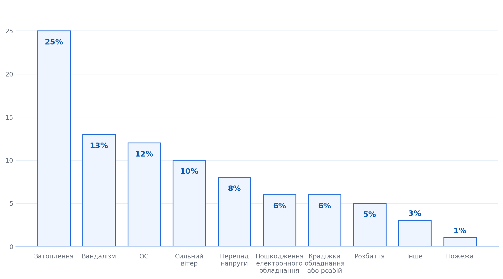

Ресторани, бари, паби, кафе, пункти харчування
*джерело: власне дослідження на основі інформації експертів ринку за 2025 рік (Poster POS)
Причини збитків, завданих у сфері громадського харчування та відшкодованих страховою компанією у 2025 році*

* джерело: внутрішня статистика страхової компанії
Вибрани події**
** Джерело: дані ДСНС
Предмет страхування
Ризики в галузі
Рекомендований обсяг захисту
Предмет страхування
Ризики в галузі
Рекомендований обсяг захисту
Предмет страхування
Ризики в галузі
Рекомендований обсяг захисту
Під час розмови повідомте клієнта про переваги страхування. Наголосіть, що поліс покриватиме збитки, що покриваються страховкою, але не виключені, що виникли внаслідок пошкодження, а також допоможе відновити операції бізнесу. Це, у свою чергу, забезпечить безперервність бізнесу та зменшить ризик відтоку клієнтів